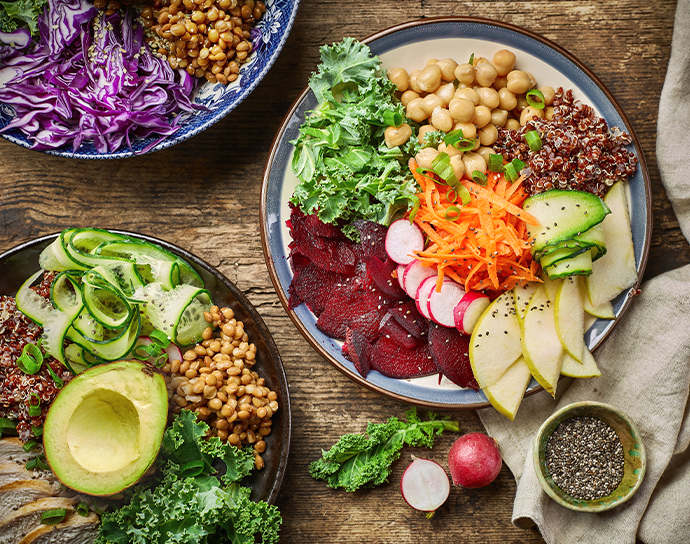

Conheça alguns alimentos saudáveis e suas principais características.

Uma alimentação saudável ajuda a manter o corpo forte e cheio de energia!

Frutas, verduras e outros alimentos naturais são importantes para uma boa alimentação.
| Informações sobre alimentos | |||||||
|---|---|---|---|---|---|---|---|
| Alimento | Categoria | Calorias | Proteína | Carboidratos | Gorduras | Fibras | Benefício |
| Maçã | Fruta | 52 kcal | 0,3 g | 14 g | 0,2 g | 2,4 g | Ajuda na digestão |
| Banana | Fruta | 89 kcal | 1,1 g | 23 g | 0,3 g | 2,6 g | Fornece energia |
| Laranja | Fruta | 47 kcal | 0,9 g | 12 g | 0,1 g | 2,4 g | Fonte de vitamina C |
| Abacate | Fruta | 160 kcal | 2 g | 9 g | 15 g | 7 g | Possui gorduras boas |
| Morango | Fruta | 32 kcal | 0,7 g | 8 g | 0,3 g | 2 g | Rico em antioxidantes |
| Brócolis | Verdura | 34 kcal | 2,8 g | 7 g | 0,4 g | 2,6 g | Rico em vitaminas |
| Cenoura | Legume | 41 kcal | 0,9 g | 10 g | 0,2 g | 2,8 g | Boa para a visão |
| Tomate | Legume | 18 kcal | 0,9 g | 3,9 g | 0,2 g | 1,2 g | Rico em antioxidantes |
| Batata-doce | Carboidrato | 86 kcal | 1,6 g | 20 g | 0,1 g | 3 g | Fornece energia |
| Aveia | Cereal | 389 kcal | 17 g | 66 g | 7 g | 10 g | Rica em fibras |
| Arroz integral | Cereal | 123 kcal | 2,7 g | 26 g | 1 g | 1,6 g | Fonte de energia |
| Feijão | Leguminosa | 127 kcal | 8,7 g | 23 g | 0,5 g | 6,4 g | Fonte de proteínas |
| Grão-de-bico | Leguminosa | 164 kcal | 8,9 g | 27 g | 2,6 g | 7,6 g | Rico em fibras |
| Ovo | Proteína | 155 kcal | 13 g | 1,1 g | 11 g | 0 g/td> | Ajuda na formação muscular |
| Peito de frango | Proteína | 165 kcal | 31 g | 0 g | 3,6 g | 0 g | Rico em proteínas |
| Salmão | Peixe | 208 kcal | 20 g | 0 g | 13 g | 0 g | Fonte de ômega-3 |
| Castanha | Oleaginosa | 656 kcal | 14 g | 12 g | 66 g | 8 g | Fonte de gorduras boas |
| Iogurte natural | Laticínio | 61 kcal | 3,5 g | 4,7 g | 3,3 g | 0 g | Fonte de cálcio |
| Leite | Laticínio | 61 kcal | 3,2 g | 4,8 g | 3,3 g | 0 g | Ajuda na saúde dos ossos |
| Espinafre | Verdura | 23 kcal | 2,9 g | 3,6 g | 0,4 g | 2,2 g | Rico em nutrientes |
| Melancia | Fruta | 30 kcal | 0,6 g | 7,6 g | 0,2 g | 0,4 g | Ajuda na hidratação |
| Principais benefícios | |||
|---|---|---|---|
| Alimento | Vitamina ou Nutriente | Benefício | Categoria |
| Cenoura | Vitamina A | Ajuda na saúde dos olhos | Legume |
| Laranja | Vitamina C | Ajuda na imunidade | Fruta |
| Leite | Cálcio | Fortalece os ossos | Laticínio |
| Salmão | Ômega-3 | Beneficia o coração | Peixe |
| Aveia | Fibras | Ajuda na digestão | Cereal |
| Banana | Potássio | Ajuda os músculos | Fruta |
Alimentação equilibrada é importante para uma vida saudável!